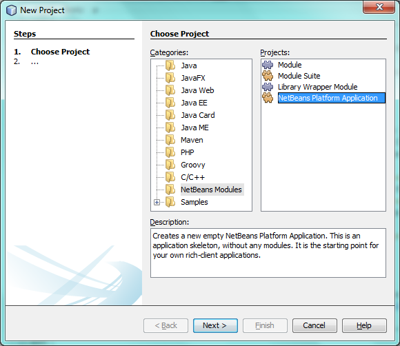
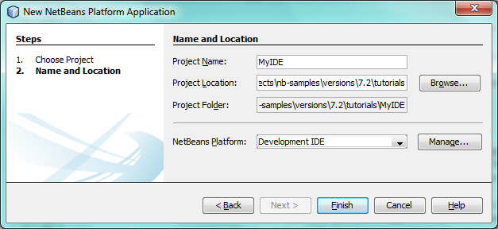
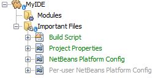
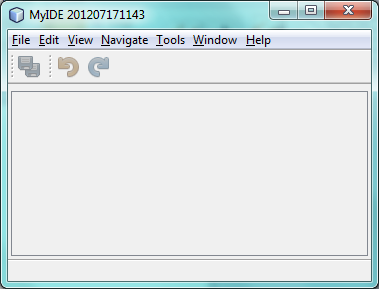
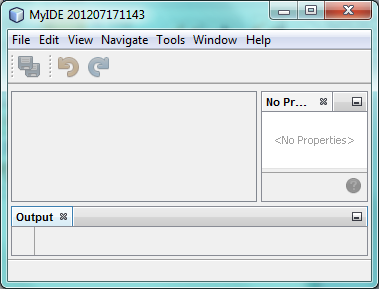
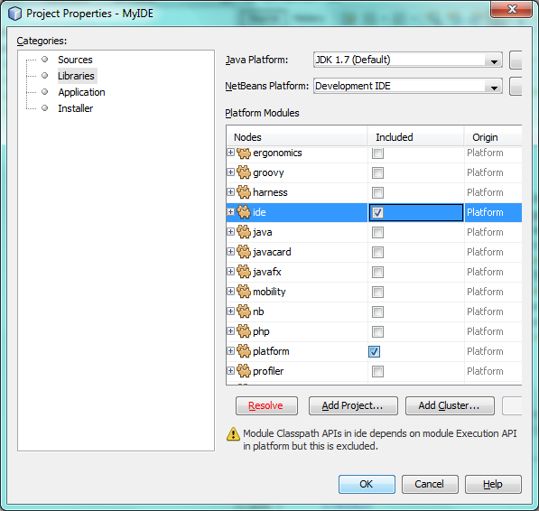
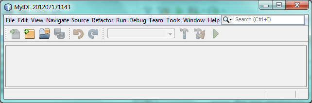

Apache NetBeans
Apache NetBeansLatest release
NetBeans Platform Tutorial for Integrated Development Environments
| This tutorial needs a review. You can edit it in GitHub following these contribution guidelines. |
The NetBeans Platform is a solid infrastructure for creating your own software development tools. However, beyond individual software development tools, an integrated development environment (IDE) assembles multiple disparate tools into a single coherent system. NetBeans IDE is itself an example of such a coherent system, though there are many others using the NetBeans Platform as their basis.
In this quick start, you are shown how to set up an integrated development environment on top of the NetBeans Platform.
-
Part 3: Coding Custom IDE Features
For troubleshooting purposes, you are welcome to download the completed tutorial source code.
| If you are new to the NetBeans Platform, do some background reading before diving into this tutorial. In particular, read the Modules API Reference document, which explains what modules are and provides some context for this tutorial, while noting that there is an extensive Reference Material section on the NetBeans Platform Learning Trail. |
Creating a Generic Application Basis
We start by creating a new NetBeans Platform application as a starting point for our geospatial system.
-
Choose File | New Project and then choose NetBeans Modules. Select "NetBeans Platform Application":

Click Next.
-
Name your new application "MyIDE" and specify a folder on disk for storing it:

Click Finish. The new project appears as follows in the Projects window:

-
Right-click the application and choose Run. The application deploys and you should see this:

-
Explore the menus and toolbars in the application and notice that you have the structure for a generic desktop application:

Including Predefined IDE Features
In this section, we include many additional modules, used in NetBeans IDE, which are useful in any other IDE too.
-
Right-click the MyIDE project node and choose Properties. In the Libraries panel of the Project Properties dialog, expand the "platform" folder and deselect "JavaFX wrapper", since you will not need it in this scenario.
-
Next, click the "ide" checkbox, as shown below:

Click the red Resolve button to include modules that the modules you included depend on. Click Finish.
-
Right-click the application and choose "Clean", to remove the user cache from the previous run and set the application back to its defaults. Then right-click the application and choose Run. The new project appears as follows in the Projects window. Notice that you now have many additional features, all typical to any IDE, which we will explore in more detail in the next section.

Coding Custom IDE Features
Depending on your needs, you can create custom features in your application that integrate with the predefined features you included in the previous section. The custom features are described via tutorials on the NetBeans Platform Learning Trail.
Congratulations. You have learned how to create the starting point for your own IDE.